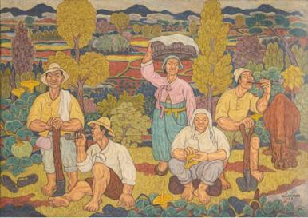
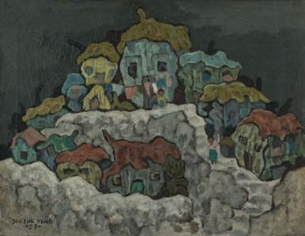

푸른 색감이 감도는 생활 풍경, 강한 에너지를 지닌 농민들의 모습, 어두운 시대 속 힘들었던 서민들의 모습, 고통 없는 낙원 속에서 뛰노는 소와 어린 아이들의 모습이 은유했던 또 다른 의미들까지. 잘 알려지지 않았던 다양한 그의 화풍과 숨겨진 은유들은 안타까운 사회 현실에 대한 작가의 시선, 이를 넘어서고자 하는 사회적 바람과 이를 진정으로 표현해 내고자 했던 작가의 의지를 짐작케 한다.
결국 작가는 어두운 밤을 걷어 내고 찾아온 새벽녘의 희뿌연 내일의 희망처럼, 암울한 시대를 넘어선 새로운 세상에로의 예찬을 끊임없이 표현해 내고 있었던 것이다.

-양달석_잠시 캔버스에 유채, 112×156.5cm, 1957, 동의대학교 석당기념관 소장
-양달석_ 무제 캔버스에 유채, 50×65cm, 1953, 경남도립미술관 소장